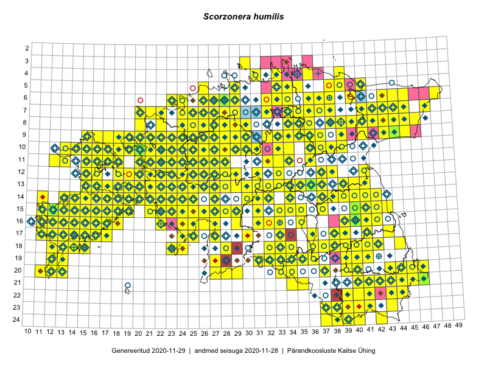

Scorzonera humilis
Uuendatud: 2016-12-02
Kaardile koondatud taksonid: Scorzonera humilis L.

Kaart põhineb 522 vaatlusel. Taksonit on leitud 295 ruudust.
Kuvatud viited 20 esimesele andmebaasikirjele, ülejäänud PlutoFis
- Malle Leht: 2015-05-16: : ala
- Tiit Hallikma, Toomas Kukk, Indrek Tammekänd: 2015-06-09: 12-28: ala
- Peedu Saar, Timo Luhamäe: 2015-05-11: 11-36: ala
- Toomas Kukk, Thea Kull, Timo Luhamäe, Ott Luuk, Peedu Saar: 2015-06-29: 14-17: ala
- Thea Kull: 2015-07-07: 16-40: ala
- Malle Leht: 2015-08-02: : ala
- Peedu Saar, Liina Oja: 2015-05-21: 16-25: ala
- Peedu Saar, Toomas Kukk: 2015-05-28: 11-17: ala
- Peedu Saar, Toomas Kukk: 2015-05-28: 10-15: ala
- Toomas Kukk, Eerik Leibak: 2015-08-09: 14-15: ala
- Toomas Kukk, Eerik Leibak: 2015-08-08: 15-18: ala
- Toomas Kukk, Thea Kull, Timo Luhamäe, Ott Luuk, Peedu Saar: 2015-06-28: 13-26: ala
- Toomas Kukk, Eerik Leibak: 2015-08-12: 09-17: ala
- Toomas Kukk, Peedu Saar: 2014-09-25: 07-42: ala
- Peedu Saar, Toomas Kukk: 2015-05-26: 10-16: ala
- Tiit Hallikma, Indrek Tammekänd, Toomas Kukk: 2015-06-09: 12-29: ala
- Toomas Kukk, Raivo Kalle: 2015-05-12: 10-39: ala
- Ott Luuk: 2014-07-24: 12-20: ala
- Ott Luuk, Jaak-Albert Metsoja: 2015-05-27: 15-23: ala
- Ott Luuk, Jaak-Albert Metsoja: 2015-05-27: 12-22: ala